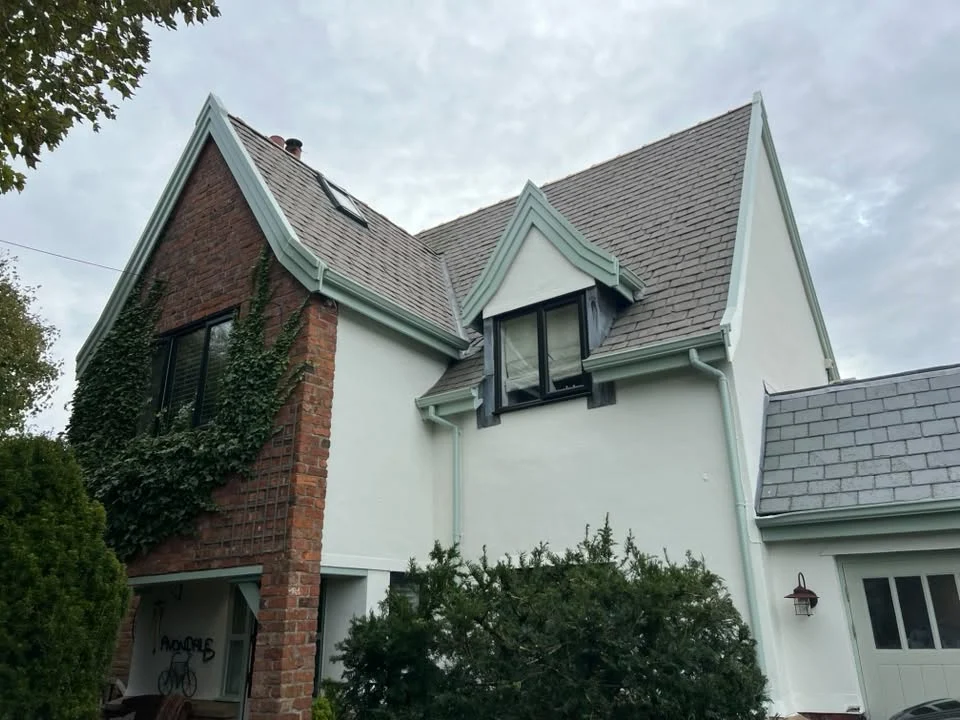
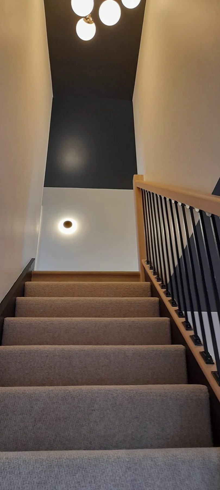
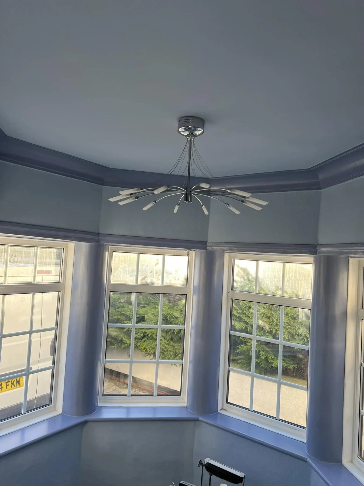

FYLDE COAST · DECORATING & PROPERTY MAINTENANCE
Beautiful finishes.
Care for every detail.
Internal and external decorating, plastering and property maintenance. Bringing a fresh finish to homes and rental properties across the Fylde Coast.
Over 20 years’ experienceFully qualified & insuredFree quotes
DECORATING TO A HIGH STANDARD
A fresh look.
A carefully finished home.
A room’s character comes from its colour, its surfaces and the details that bring everything together. GP Carlton combines decorating, plastering and property maintenance to help your home look its best.
With over 20 years’ experience, we work on internal and external projects across the Fylde Coast and surrounding areas, for domestic and rental properties.
Tell us about your plans →

PREPARATION MAKES THE DIFFERENCE
From stripped back
to a statement finish.
This entrance door project shows the preparation behind the finish: old coatings stripped back, followed by a deep black painted finish that highlights the original panel detail.
Tap either photograph to view the complete image.
Explore exterior decorating →OUR SERVICES
Inside, outside
and the details between.
Decorating, plastering and maintenance for the spaces you care about.
Interior decorating
Interior painting and decorating across the Fylde Coast, from individual rooms to hallways and staircases.
Explore this service →Exterior decorating
External painting and decorating for homes and properties on the Fylde Coast.
Explore this service →Plastering
Plastering, ceiling work and surface preparation for properties across the Fylde Coast.
Explore this service →Property maintenance
Property maintenance and repair enquiries for domestic and rental properties across the Fylde Coast.
Explore this service →WATCH OUR WORK
A closer look
at the finish.
Walk through an interior decorating project and take a closer look at the entrance paintwork. Play either video to explore the details.
Discuss your project →RECENT PROJECTS
Craft in the detail.
Character in the finish.
Interiors, exterior paintwork, plastering and preparation. Tap any image for a full view.
GP CARLTON · FYLDE COAST
Experience that
shows in the finish.
GP Carlton Decorators & Property Maintenance provides professional internal and external services, backed by over 20 years’ experience.
01
Preparation and finish
From surface work and plastering to the final decorative detail.
02
Domestic and rental properties
Refresh a room, improve your exterior or discuss a list of property repairs.
03
Clean, reliable service
Fully qualified and insured, with a straightforward approach to your project.
ADDING COLOUR TO THE FYLDE COAST
Local service. A professional finish.
Based in Marton, working across the Fylde Coast and surrounding areas. Send your postcode to discuss your project.
Interior decoratingExterior decoratingPlasteringProperty repairs
BEFORE WE GET STARTED
A few useful answers.
What work can you help with?
Internal and external decorating, plastering and property maintenance. Send details and photographs of the work so we can discuss what is needed.
Do you work on rental properties?
Yes, enquiries are welcome for domestic and rental properties, including decorating, plastering and property repairs.
Where do you work?
The Fylde Coast and surrounding areas, based in Marton. Send your postcode to confirm availability.
What should I send for a quote?
Your postcode, photographs, the rooms or surfaces involved and any repairs needed. Let us know the finish you have in mind.
Can I watch project videos?
Yes. The Watch our work section includes two project videos with standard playback controls.
LET’S TALK ABOUT YOUR PROJECT
Your ideas.
Our attention to detail.
Send photographs, your postcode and a few details about the work you have in mind. Get in touch for a free quote.
Or email
gpcarltondecorators@hotmail.com
GP CARLTON · FYLDE COAST
A fresh finish.
A home to be proud of.
Tell us about your decorating or property maintenance plans.